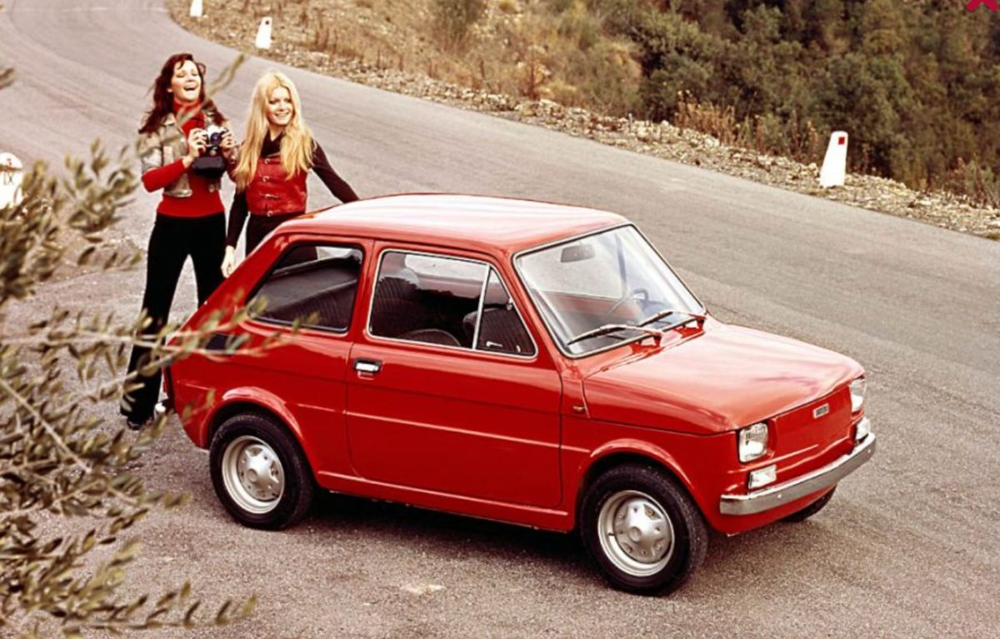

La Fiat 126 è un'automobile prodotta dalla FIAT dal 1972 al 2000. La commercializzazione in Europa Occidentale terminò nel 1991, proseguendo la vendita sul mercato polacco, paese in cui la vettura veniva prodotta dal 1973. Fu l'ultima auto con motore posteriore e trazione posteriore prodotta dalla casa torinese.
| Potenza/coppia | 23CV@4800rpm / 39Nm@2400rpm |
| Cilindrata | 594cm3 |
| Trasmissione | 4 marce |
| Freni | tamburo |
| Peso | 645kg |
| Lunghezza | 3105mm |
| Larghezza | 1375mm |
| Altezza | 1345mm |